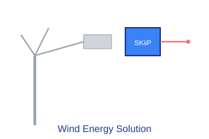

Wind energy applications demand exceptional reliability and longevity due to their challenging operating environments and high maintenance costs. Semikron's wind energy solutions, particularly our SKiiP systems, are specifically engineered for these demanding conditions. These solutions feature press-fit technology that eliminates the need for base plates and thermal paste, resulting in superior thermal cycling performance and eliminating potential failure points. Our components are designed to withstand the vibration, temperature fluctuations, and electrical stress inherent in wind turbine applications. With decades of experience in the renewable energy sector, we provide complete solutions from converter systems to technical support for wind farm operators.
Press-fit technology eliminates thermal interface degradation
Engineered for harsh wind turbine environments
Continued availability for 20+ year project lifecycles
Typical power electronics configuration for wind applications

The grid-side converter utilizes Semikron's SKiiP systems with press-fit technology for superior reliability in the harsh vibration environment of wind turbines. The system typically operates in active rectifier mode to control DC-link voltage and provide grid support functions including reactive power control and low-voltage ride-through capability.
Optimal Semikron components for wind energy applications
Press-fit technology for superior vibration resistance
Voltage: 1200V - 1700V
Current: 300A - 600A
Topology: Phase Leg, Dual Phase Leg
Advanced IGBT technology for high efficiency
Voltage: 1200V - 1700V
Current: 200A - 450A
Technology: IGBT4 with improved thermal performance
Key factors for wind energy power electronics design
Wind turbines experience continuous vibration and occasional shock loads during operation. SKiiP systems with press-fit technology provide superior mechanical reliability compared to traditional soldered connections. Proper mounting and mechanical design of the power electronics cabinet is critical to ensure long-term reliability.
Temperature fluctuations cause thermal stress on power semiconductor assemblies. Semikron's press-fit technology eliminates thermal interface materials which are common failure points. Regular thermal cycling testing validates long-term reliability under these conditions.
Modern wind installations must comply with increasingly strict grid codes requiring low-voltage ride-through (LVRT), reactive power support, and harmonics control. Semikron's power modules support these requirements with fast switching capabilities and low losses.
Wind farms require 20+ year operational lifespans with minimal maintenance. Component selection must consider long-term reliability with conservative stress ratings. Semikron's extensive field experience enables accurate MTBF predictions.
Technical resources for wind energy designs
Guidelines for designing converters with Semikron components
Proper installation procedures for SKiiP systems
Testing procedures for wind turbine applications
Implementing grid code requirements with Semikron products
Implementation of Semikron solutions in harsh marine environments
Offshore wind turbines operate in extremely harsh environments with high humidity, salt corrosion, and severe vibration. The client required power conversion systems with 25-year design life and minimal maintenance requirements.
Semikron SKiiP systems were selected for the grid-side converters due to their press-fit technology eliminating thermal interface degradation. The solution included enhanced conformal coating for corrosion protection and redundant cooling systems for increased reliability.
The installation has operated successfully for 8 years with zero power electronics failures. The MTBF exceeded original projections by 40%, resulting in significant cost savings in avoided maintenance.
Essential components for wind energy power conversion
Comprehensive documentation for wind energy designs
Our FAE team specializes in wind power electronics applications
Contact Wind Energy Experts
FAE Technical Commentary
Expert insights on wind energy applications
For offshore applications, we strongly recommend SKiiP systems with enhanced conformal coating for corrosion protection. The press-fit technology provides superior reliability compared to traditional base-plate modules in these harsh environments.
When designing for extreme temperature variations, utilize Semikron's thermal design tools to properly size the cooling system. Account for the full ambient temperature range including internal heat generation during full power operation.
For grid code compliance, implement fast control loops with sufficient switching frequency headroom. Semikron's IGBT4 technology provides the switching performance needed for advanced grid support functions while maintaining high efficiency.